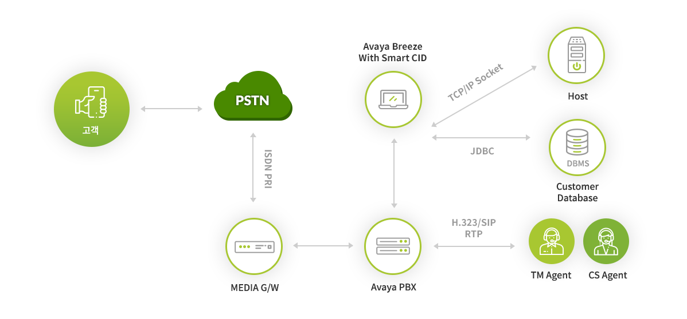

@@include('tab.html', {
"has_tab" : true,
"tab_list" : ["CC", "UC", "영상회의", "SI", "CLOUD", "부가 솔루션"],
"target_list" : ["#cc", "#uc", "#video", "#si", "#cloud", "#other"],
"type" : "type6"
})
ASIC100
(Arisys Smart Caller ID Changing Solution)
자동 발신자번호 변경
(Arisys Smart Caller ID Changing Solution)
자동 발신자번호 변경
ASIC100 솔루션은 아웃바운드 텔레마케팅 활동에서 고객이 전화를 받는 응답율을 높이기 위해서 발신자번호를 고객의 특성에 따라서 자동으로 변경을 해주는 부가솔루션입니다.
ASIC100 (자동 발신자 번호변경 솔루션)은 기업들의 아웃바운드 텔레마케팅™ 활동을 보다 효과적으로 지원할 수 있도록 고객 DB의 특성에 따라 발신자 번호를 자동으로 변경할 수 있게 함으로써 업무 효율성을 향상할 수 있도록 지원합니다. ASIC100 (자동 발신자 번호변경 솔루션)은 Avaya IP 교환기와 Avaya의 개발플랫폼인 Breeze 기반에서 스냅인(snap-in) 모듈 형태로 동작하여 등록된 Call 을 모니터링하여 아웃바운드 정책에 따라 전화 발신자번호를 자동 변경하도록 서비스를 제공하는 솔루션입니다.
